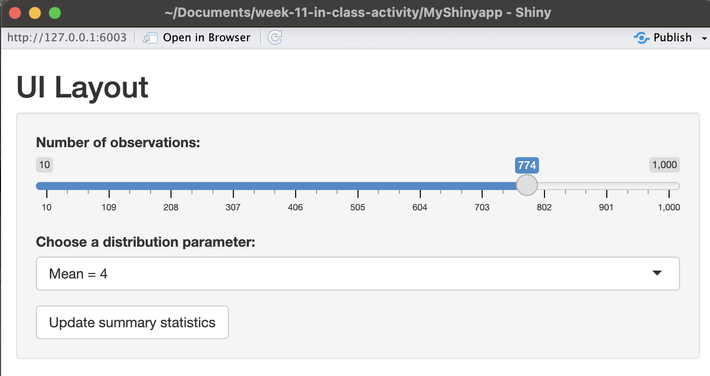
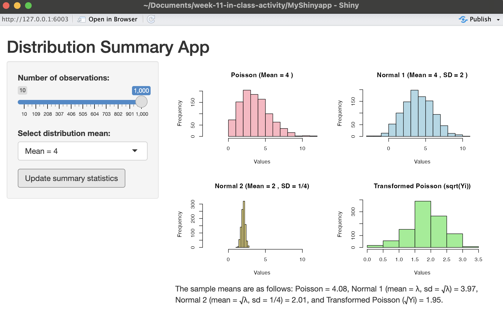
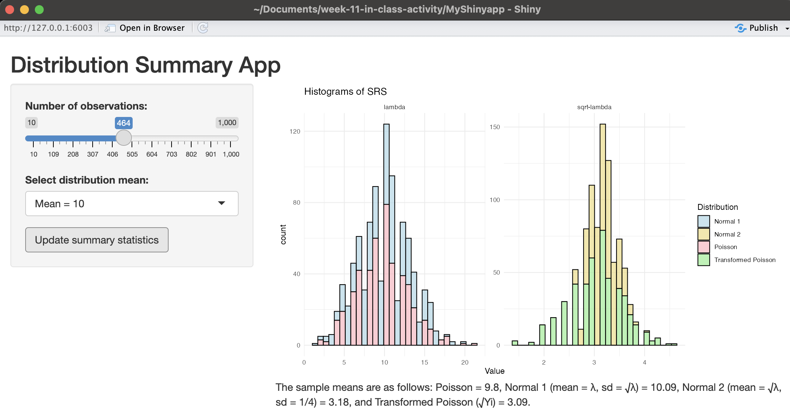

library(shiny)
ui <- fluidPage(
titlePanel("Distribution Summary App"),
sidebarLayout(
sidebarPanel(
sliderInput("obs", "Number of observations:",
min = 10, max = 1000, value = 100),
selectInput("mean", "Select distribution mean:",
choices = c("Mean = 4", "Mean = 10", "Mean = 100")),
actionButton("update", "Update summary statistics")
),
mainPanel(
plotOutput("distPlot"),
textOutput("summaryText")
)
)
)Week 11 In-Class Activity
Activity 1
ui.r code:
server.r code:
library(shiny)
server <- function(input, output, session) {
}
Activity 2
server.r code:
library(shiny)
server <- function(input, output, session) {
observeEvent(input$update, {
n <- input$obs
lambda <- as.numeric(sub("Mean = ", "", input$mean))
# Generate original samples
poisson_sample <- rpois(n, lambda = lambda)
normal_sample1 <- rnorm(n, mean = lambda, sd = sqrt(lambda))
normal_sample2 <- rnorm(n, mean = sqrt(lambda), sd = 1/4)
# Transformed Poisson sample
transformed_poisson <- sqrt(poisson_sample)
# Calculate means
poisson_mean_val <- mean(poisson_sample)
normal_mean1_val <- mean(normal_sample1)
normal_mean2_val <- mean(normal_sample2)
transformed_mean_val <- mean(transformed_poisson)
output$summaryText <- renderText({
paste0(
"The sample means are as follows: Poisson = ", round(poisson_mean_val, 2),
", Normal 1 (mean = λ, sd = √λ) = ", round(normal_mean1_val, 2),
", Normal 2 (mean = √λ, sd = 1/4) = ", round(normal_mean2_val, 2),
", and Transformed Poisson (√Yi) = ", round(transformed_mean_val, 2), "."
)
})
# Plot all 4 distributions
output$distPlot <- renderPlot({
par(mfrow = c(2, 2)) # 2x2 layout
# Plot Poisson sample
hist(poisson_sample, main = paste("Poisson (Mean =", lambda, ")"),
xlab = "Values", col = "lightpink", xlim = range(c(poisson_sample, normal_sample1, normal_sample2)))
# Plot Normal sample 1
hist(normal_sample1, main = paste("Normal 1 (Mean =", lambda, ", SD =", round(sqrt(lambda), 2), ")"),
xlab = "Values", col = "lightblue", xlim = range(c(poisson_sample, normal_sample1, normal_sample2)))
# Plot Normal sample 2
hist(normal_sample2, main = paste("Normal 2 (Mean =", round(sqrt(lambda), 2), ", SD = 1/4)"),
xlab = "Values", col = "lightgoldenrod", xlim = range(c(poisson_sample, normal_sample1, normal_sample2)))
# Plot transformed Poisson
hist(transformed_poisson, main = "Transformed Poisson (sqrt(Yi))",
xlab = "Values", col = "lightgreen", xlim = range(transformed_poisson))
par(mfrow = c(1, 1)) # Reset layout
})
})
}
Activity 3
server.r code:
library(shiny)
library(ggplot2)
library(dplyr)
Attaching package: 'dplyr'The following objects are masked from 'package:stats':
filter, lagThe following objects are masked from 'package:base':
intersect, setdiff, setequal, unionlibrary(tidyr)
server <- function(input, output, session) {
observeEvent(input$update, {
# Number of observations from the slider
n <- input$obs
# Correctly extract lambda from dropdown input
lambda <- as.numeric(sub("Mean = ", "", input$mean)) # Get the numeric value from the dropdown
# Generate Simple Random Samples (SRS)
poisson_sample <- rpois(n, lambda = lambda)
normal_sample1 <- rnorm(n, mean = lambda, sd = sqrt(lambda))
normal_sample2 <- rnorm(n, mean = sqrt(lambda), sd = 1/4)
transformed_poisson <- sqrt(poisson_sample)
# Calculate the sample means for each distribution
poisson_mean_val <- mean(poisson_sample)
normal_mean1_val <- mean(normal_sample1)
normal_mean2_val <- mean(normal_sample2)
transformed_mean_val <- mean(transformed_poisson)
# Create a data frame with all samples for ggplot
data <- bind_rows(
data.frame(Value = poisson_sample, Distribution = "Poisson", ExpectedMean = "lambda"),
data.frame(Value = normal_sample1, Distribution = "Normal 1", ExpectedMean = "lambda"),
data.frame(Value = normal_sample2, Distribution = "Normal 2", ExpectedMean = "sqrt-lambda"),
data.frame(Value = transformed_poisson, Distribution = "Transformed Poisson", ExpectedMean = "sqrt-lambda")
)
# Render the histograms with facets
output$distPlot <- renderPlot({
ggplot(data, aes(x = Value, fill = Distribution)) +
geom_histogram(bins = 30, color = "black", alpha = 0.7) +
facet_wrap(~ExpectedMean, scales = "free") + # Facet by ExpectedMean
scale_fill_manual(values = c("Poisson" = "lightpink", "Normal 1" = "lightblue",
"Normal 2" = "lightgoldenrod", "Transformed Poisson" = "lightgreen")) +
ggtitle("Histograms of SRS") +
theme_minimal() +
theme(legend.position = "none") # Remove legend for clarity
})
# Render the summary text with sample means
output$summaryText <- renderText({
paste0(
"The sample means are as follows: Poisson = ", round(poisson_mean_val, 2),
", Normal 1 (mean = λ, sd = √λ) = ", round(normal_mean1_val, 2),
", Normal 2 (mean = √λ, sd = 1/4) = ", round(normal_mean2_val, 2),
", and Transformed Poisson (√Yi) = ", round(transformed_mean_val, 2), "."
)
})
})
}